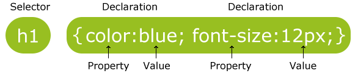
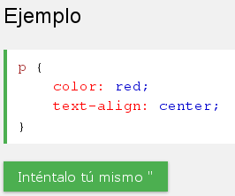
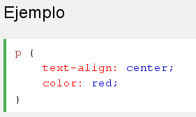

Un conjunto de reglas CSS consta de un selector y un bloque de declaración:
En el siguiente ejemplo todos los elementos <p> estarán alineados-centro, con un color rojo texto:
selectores CSS se utilizan para "encontrar" (o seleccionar) elementos HTML en función de su nombre de elemento, de la identificación, clase, atributo, y mucho más.
El selector de elementos selecciona elementos basados en el nombre del elemento. Puede seleccionar todos los elementos <p> en una página como esta (en este caso, todos los elementos <p> estarán alineados-centro, con un color rojo texto):
El selector de ID utiliza el atributo id de un elemento HTML para seleccionar un elemento específico.
La identificación de un elemento debe ser único dentro de una página, por lo que el selector de ID se utiliza para seleccionar un elemento único!
Para seleccionar un elemento con un ID específico, escribe un carácter almohadilla (#), seguido por el id del elemento.
La regla de estilo a continuación se aplica al elemento HTML con id = "párrafo1":
El selector de clase selecciona los elementos con un atributo de clase específica.
Para seleccionar elementos con una clase específica, escriba un punto (.) Carácter, seguido del nombre de la clase.
En el siguiente ejemplo, todos los elementos HTML con class = "centro" será de color rojo y alineado al centro: